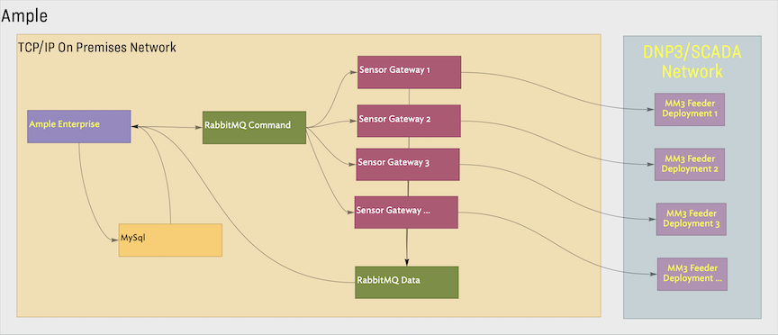

In the common case, the system was deployed into colocation facilities managed by client power companies. The Ample platform provides a single entry point to view measurements, status and configurations for the sensor fleets. Additionally, operators can manage and verify sensor configurations and upgrade the device firmware via OTAP.
The sensors communicate via a radio mesh network and communicate using the DNP3 protocol. The protocol is point-oriented. Its primary use is for configuring individual numerical and boolean values. Commands sent from the Ample interface are consumed by the Sensor Gateways which handle a set of sensors and marshall data to and from DNP3.

Because DNP3 is a connectionless protocol, akin to UDP, and point-oriented, building up data-series datasets required quite a bit of care. All communication to and from the field is asynchronous and conducted over very low-bandwidth. Operations to collect time-series data cached on individual devices can take hours and some procedures take days to complete.
As the product line evolved, smaller power companies expressed interest in fleet management over WiFI. In order to address these use cases, a cloud-based deployment was added to the company’s offerings.